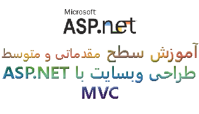
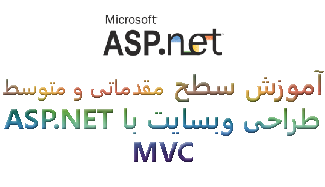

دوره ی ASP.NET MVC مقدماتی و متوسط
 


ای اس پی دات نت ام وی سی یک فریم ورک رایگان است که بعد از ای اس پی دات نت وب فرم بمنظور طراحی و توسعه وبسایت ووب اپلیکیشن توسط شرکت مایکروسافت ارائه شد .بطور مختصر توجه شما را قبل از ارائه آموزش به نکات ذیل جلب میکنیم :
- ام وی سی مخفف مدل – ویو – کنترلر یک الگوی معماری است نه الگوی طراحی .
- ام وی سی خاص دات نت نیست قبلا در جاوا و پی اچ پی پیاده سازی شده است.
الگوهای معماری مدرن :
- ام وی وی ام برای دسک تاپ اپلیکیشن های مدرن بکار میرود.
- ام وی پی سبک های سنتی مثل ویندوز فرم را مدرن میکند.
- ام وی سی هم برای طراحی وبسایت به کار میرود.
- معماری سنتی معماری چند لایه است که در وب فرم کار کردید.(DAL-BLL-UIL)
- ام وی سی به معنای نسل بعدی وب فرم نیست بلکه به موازات وب فرم به پیش میرود.
- در اصل به نوعی روی ای اس پی دات نت وب فرم سوار است.پس بهتر است قبل از دیدن این آموزش آموزش مربوط به ای اس پی دات نت وب فرم را ملاحضه بفرمائید.
سرفصل های آموزشی و آنچه در این مجموعه خواهید آموخت عبارتند از :
- مقدمه و مقایسه ام وی سی و وب فرم
- شروع کار با ویژوال استدیو
- ویو در ام وی سی
- لایوت و مدیریت خطا در ام وی سی
- ای دی او دات نت انتیتی فریم ورک کد فرست
- انتیتی فریم ورک در ام وی سی
- T4_Template
- خلق و ایجاد اچ تی ام ال هلپر و اکستنشن متد
- ای ریا در ام وی سی
- ولیدیشن , چند زبانگی و خلق اتربیوت در ام وی سی
- آزمایش پروژه و یونیت تستینگ
توجه : آموزش های فصل چهارم این دوره مربوط به دوره انتیتی فریم ورک میشود که میتوانید از این قسمت دریافت نمائید.
نظرات شما
قسمت نظرات با استفاده از سرویس دیسکاس پیاده سازی شده است. متأسفانه این سرویس از داخل ایران قابل دسترس نیست. لطفا از آی پی خارجی استفاده کنید.